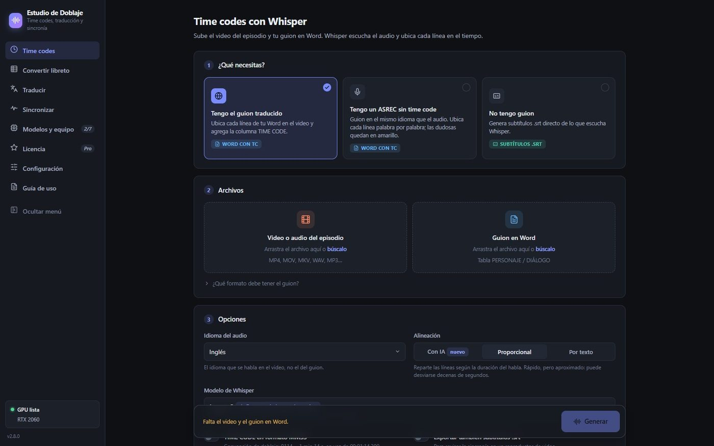
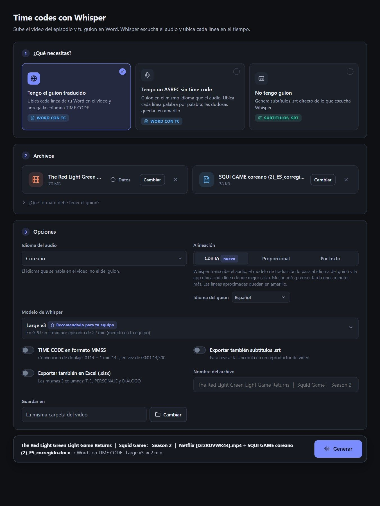
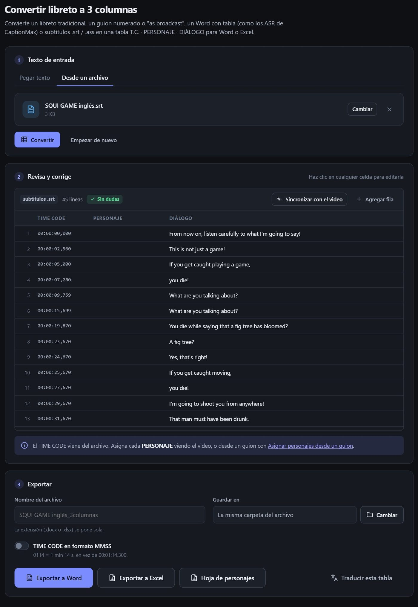
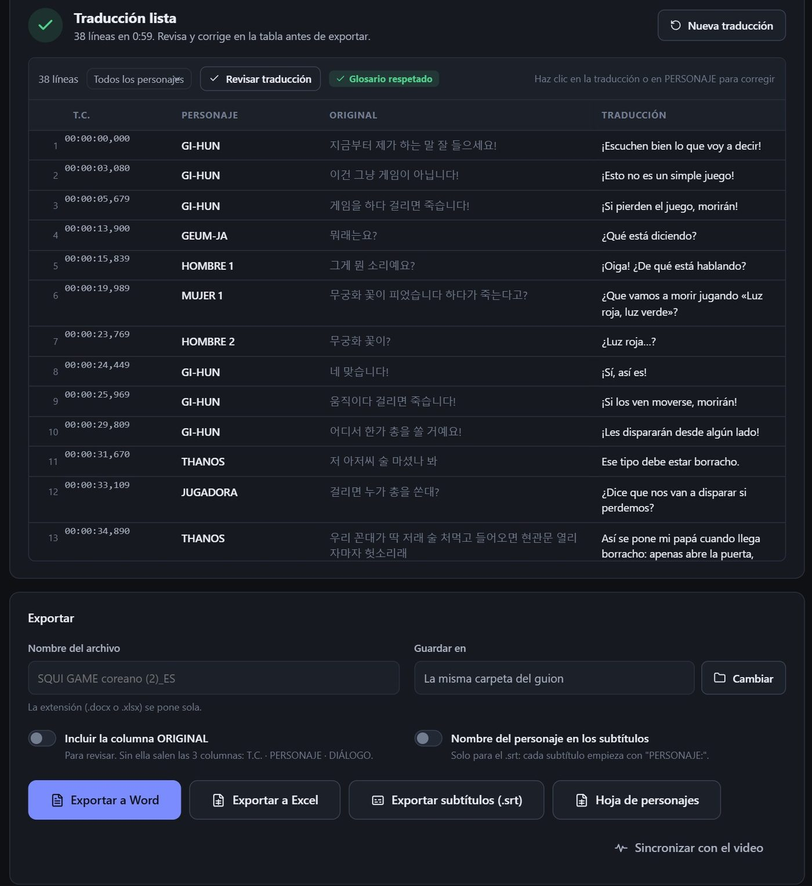
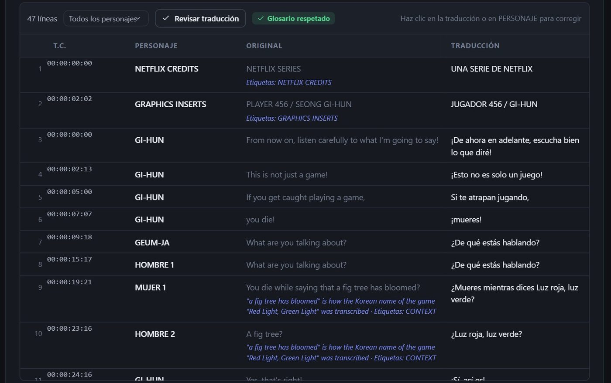
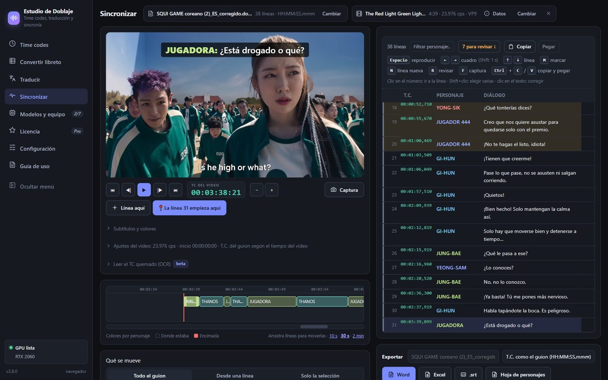
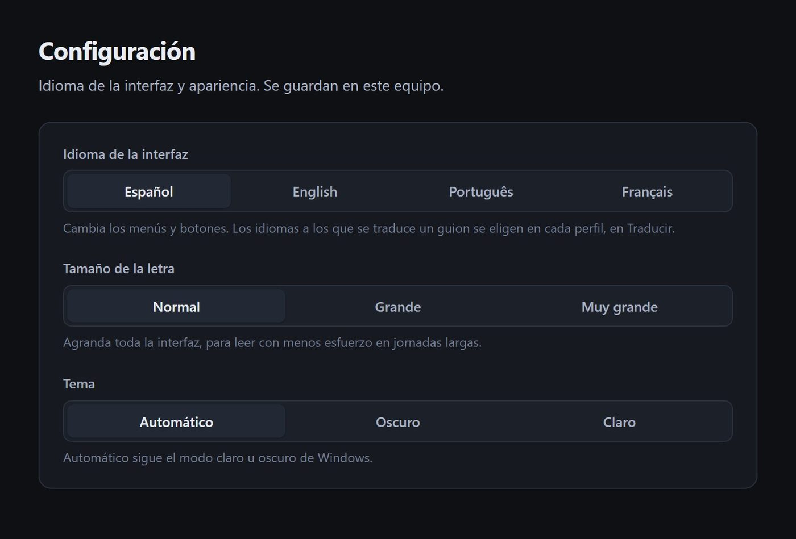

Del guion del cliente a la entrega con time codes, en tu computadora
Time codes con Whisper, traducción con IA que sigue tu estilo y tu glosario, y sincronía con el video. Sin internet: tus guiones y videos nunca salen de tu equipo.

Un episodio completo, en una sola app
Cada herramienta funciona sola o encadenada con las demás.
Time codes con Whisper
Subes el video y tu guion: Whisper escucha el audio y pone el TIME CODE a cada línea.
- Guion traducido: lo ubica en el video aunque esté en otro idioma, con alineación por IA.
- ASREC sin time code: palabra por palabra; las líneas dudosas quedan en amarillo.
- Sin guion: subtítulos .srt directo de lo que escucha.

Convertir libreto
Cualquier guion queda en la tabla de siempre: T.C. · PERSONAJE · DIÁLOGO, lista para Word o Excel.
- Libretos tradicionales, guiones numerados, "as broadcast", ASR de Word con tabla y subtítulos .srt / .ass.
- Guiones de cine y series de EE. UU.: pegas el texto y saca solo los diálogos.
- Hoja de personajes en Excel y autocompletado de nombres.

Traducir con tu estilo
Un modelo de IA que corre en tu equipo traduce el guion siguiendo el perfil de la serie: reglas de lip sync, trato, groserías y un glosario de personajes y términos.
- Perfiles por género (animé, caricaturas, drama, voice-over, subtítulos…) y por serie.
- El glosario se respeta: lo que no cumple se pide otra vez y, si aun así falla, queda para revisar.
- Memoria de la serie: las líneas que ya aprobaste se reutilizan en los episodios siguientes.
- Es un borrador para ti: lo revisas y adaptas en la misma tabla.

Excel de Netflix PRO
Carga el DUB SCRIPT tal como llega. La app traduce TRANSCRIPTION, lee las ANNOTATIONS y TAGS como contexto y devuelve una copia del mismo Excel con la columna DIALOGUE llena.
- Formato, T.C. y las demás hojas quedan igual.
- En versiones nuevas, conserva lo que ya traduciste.

Sincronizar con el video
Ajusta los T.C. viendo el video, con el subtítulo encima y la línea de tiempo por personaje.
- Arrastra y estira líneas con el mouse; copia y pega diálogos que se repiten.
- Filtra por personaje y mueve solo sus líneas.
- Comparar versiones y leer el TC quemado PRO cuando el cliente cambia cortes o cortinillas.

Novedades de la 2.8
La app habla tu idioma y se adapta a tus jornadas largas.

Y lo que llegó en la 2.7
Gratis para empezar. Pro para producir.
Habrá una versión gratis y una Pro de pago único, sin suscripción.
Gratis
- Time codes con Whisper, sin límite
- Convertir libreto y hoja de personajes
- Sincronizar con el video
- Traducir: 1 guion al día
- Perfiles incluidos + Mi perfil editable
- Glosario de 25 entradas, con Excel
⭐ Pro
- Traducciones sin límite
- Crear, importar y compartir perfiles
- Glosarios sin límite y memoria de la serie
- Cola de episodios y revisión avanzada
- Excel de Netflix (DUB SCRIPT)
- Comparar versiones, leer el TC quemado y asignar personajes
Requisitos
La app revisa tu equipo y te recomienda los modelos que mejor le quedan, con el tiempo estimado por episodio.
💻 Sistema
- Windows 10 u 11 de 64 bits, macOS (Apple Silicon) o Linux.
- 8 GB de RAM como mínimo; 16 GB o más para traducir con modelos más grandes.
- Unos 10 GB libres para los modelos (se descargan una sola vez).
- Internet solo para instalar y descargar los modelos.
🎮 Tarjeta de video (recomendada)
- NVIDIA (GTX 1650, RTX 2060, 3060…): lo más rápido. En una RTX 2060, un episodio de 25 min en ~5 min con Whisper Large v3.
- AMD Radeon o Intel Arc, y gráficas integradas: con Vulkan.
- Sin tarjeta de video también funciona, más lento.
Preguntas frecuentes
¿Otra duda? Revisa la guía de uso (PDF).
¿Cuándo se podrá descargar?
Muy pronto. Mientras tanto, la guía de uso muestra cada función paso a paso, con capturas.
¿Mis guiones o videos se suben a algún servidor?
No. Whisper y los modelos de traducción corren en tu computadora. La app solo usa internet para descargar los modelos y avisarte de versiones nuevas.
¿La traducción reemplaza al traductor?
No: es un borrador que sigue tu estilo y tu glosario para ahorrarte tiempo. Tú revisas, adaptas y das la sincronía final, como siempre.
¿En qué idiomas está?
La interfaz está en español, inglés, portugués y francés. La traducción de guiones está pensada para doblaje al español latino, pero cada perfil elige el idioma de origen, el de destino y su variante.
¿Funciona en mi laptop?
Sí. En Modelos y equipo la app detecta tu procesador, tu memoria y tu tarjeta de video y te recomienda modelos que quepan. Con gráfica integrada, conecta el cargador.
Muy pronto en tu computadora
Mientras tanto, conoce cada función en la guía de uso.